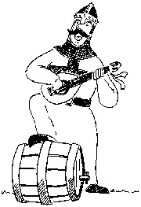
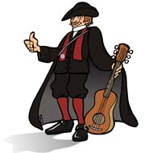

Corria o mês de março de 1994, no emblemático “Café Óscar” em Guimarães, quando um grupo de jovens estudantes da Universidade do Minho, decidiu dar início a esta Mui Trovadora Tuna, a Afonsina - Tuna de Engenharia da Universidade do Minho. O “Café Óscar” tornou-se depois a sua casa, graças essencialmente ao Sr. António Castro e a sua esposa, que acolheram a Afonsina como parte da Família.
Desde então tem vindo a percorrer o país e o mundo, carregando consigo as cores da primeira bandeira portuguesa. Participando em diversos atividades, desde saraus a encontros de tunas, passando pelos mais variados eventos culturais a festivais de Tunas de grande prestígio, até à simples serenata que nos enche o coração, a Afonsina tem vindo a somar quilómetros em prol da música e da boémia.
Ao quinto ano da sua existência, a Afonsina realizou pela primeira vez o seu festival, denominado "Cidade Berço".A cidade de Guimarães recebe, assim, um leque diverso constituído por algumas das mais conceituadas Tunas Universitárias do país.
O Brasão é constituído por quatro divisórias que representam e simbolizam a razão e a origem da tuna:
No canto superior esquerdo encontra-se o livro e as espigas da sabedoria que, como símbolos da nossa academia, representam a nossa origem.
No canto superior direito encontra-se uma cruz azul, símbolo das Cruzadas lideradas por D. Afonso Henriques, primeiro Rei de Portugal, que dão origem ao nome da nossa tuna;
Na divisória do canto inferior direito encontra-se uma imagem de N.ª Sra. da Oliveira, santa padroeira da nossa nobre cidade. Vemos também representadas duas Quinas com 11 besantes, elementos adicionados ao escudo por D. Afonso Henriques.
No canto inferior esquerdo, através de dois bandolins acompanhados pelo símbolo máximo do traje da academia minhota, o Tricórnio, simbolizamos a nossa inspiração maior pela criação da Tuna, representar a nossa nobre Academia com a nossa paixão pela música.
Na fita sob o brasão está inscrito o nome "Afonsina" com a cor de tijolo, cor essa, representativa de Engenharia.
O traje da Afonsina - Tuna de Engenharia da Universidade do Minho tem como base o traje académico da Universidade do Minho. Porém, algumas alterações foram efetuadas de modo a identificar a tuna e os seus elementos de acordo com a sua hierarquia. Importa também referir que a Afonsina tem como base a cor de Engenharia (cor de tijolo).

Em tudo igual ao traje académico diferindo apenas nos
seguintes elementos, que visam uma simbiose estética
entre a cor e o traje, criando uma identidade própria:
- Substituição da cor das meias do traje académico
para a cor de tijolo;
- Adoção de um elemento, a que chamamos Pendericalho, da
cor de tijolo, que contém o
emblema da Tuna.
Este traje pretende ser uma homenagem da Afonsina a D. Afonso Henriques, uma vez que foi introduzida uma veste com uma cruz azul , que simboliza a bandeira que ele carregou durante a sua reconquista. Para além desta alteração, há também a remoção do casaco e do tricórnio do traje académico.
Os Pioneses, são aqueles que ainda aspiram a ser Peões.
Deste modo, têm de ser muito bem tratadinhos. Por isso,
usam:
- Pijama - para se sentirem confortáveis
e à vontade, tal como estariam depois de chegarem à
sua cama após uma bela noite do Enterro da Gata;
- Kit de viagens da Floribella - constituído
por meias e sapatilhas. Este kit serve para não haverem
desculpas de atraso ou de cansaço, visto que as meias
e as sapatilhas são feitas num material extremamente
resistente, excepto quando se põe os pés no
chão;
- Cuecas e capa do Super Homem - as cuecas
têm como função enganarem as donzelas
em relação ao dito cujo. A capa, serve de auxilio
no voo complicado,àrduo e longínquo mas motivador,
que é o voo onde o check-in faz-se como Pionés
e o check-out já se efetua como elemento oficial
da Tuna, passando o viajante a Peão desta mui trovadora
Tuna.